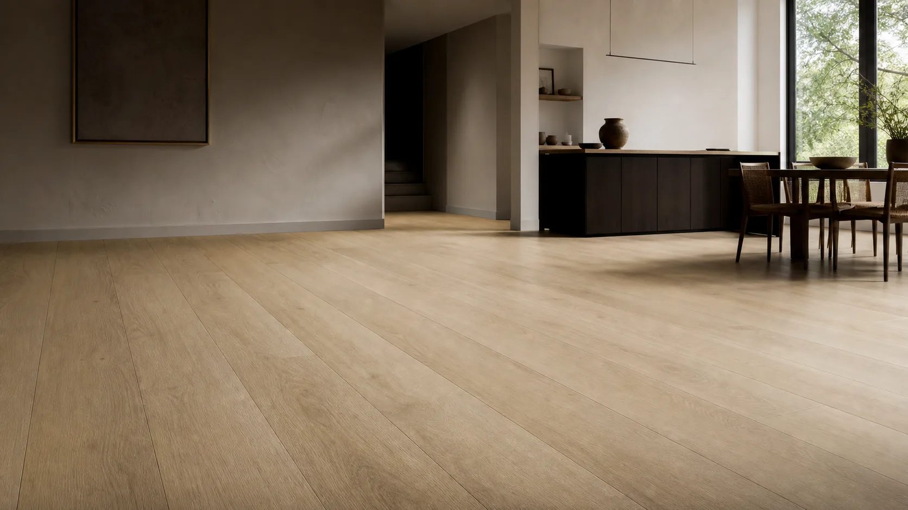

Can PVC wall panels be used on a floor?
A buyer may notice that both wall panels and SPC flooring contain PVC and ask whether one can replace the other. The material name is not the design specification. Walking loads, abrasion, slip, indentation, locking, subfloor movement and cleaning exposure differ substantially from wall service.

Do not use a decorative PVC wall panel as flooring unless the manufacturer specifically designs, tests and approves that exact product as a floor system. For a new floor order, start with a floor-intended SPC or resilient-floor specification and verify its intended-use class.
Start with intended use rather than composition
A wall panel is often optimized for low weight, decorative face and vertical fixing. A floor covering has to tolerate repeated foot traffic, furniture, cleaning and, in some projects, rolling loads. Even a thick wall panel cannot be assumed to have the wear layer, core behavior, lock, slip data or installation instructions needed for a floor. The same distinction applies to ceiling panels marketed as wall panels.
Read the floor specification
ISO 10874:2009 provides a classification framework linked to area and intensity of use for relevant floor-covering types. Ask the seller which floor-product standard and class apply to the exact SKU, then request the matching test evidence. Compare wear layer, total thickness, backing, joint system, dimensional stability, subfloor requirements and warranty exclusions. A catalog image of a stone or wood finish cannot answer these questions.
Quote the right category
If the design needs a coordinated floor and wall appearance, ask for samples from both product families and compare them side by side under project lighting. The finish may coordinate without being the same material or construction. On the quotation, keep the wall panel and floor SKU codes separate, with their own accessories, packing and evidence. This makes later claims and installation responsibility much clearer for distributors.
Illustrative buyer situation
A showroom owner likes a wood-print PVC wall panel and asks to continue the same finish over the floor. The matching appearance is a design goal, not proof that the wall profile can take rolling display stands. The buyer can instead compare a floor-intended SPC plank with the wall panel under the same lighting, then specify each system separately. The final order should list floor use class, subfloor instructions and wall trims as different approval lines, even if the color family is coordinated.
Buyer checklist before ordering
- Floor-intended product code and use class
- Wear, slip and indentation evidence applicable to the destination
- Subfloor and installation instructions
- Separate wall and floor quotation lines
Save the approved sample, product code and document references with the purchase order. A catalog helps shortlist a finish but does not establish the final specification, local acceptance, price or delivery terms.
Common buyer questions
Both products contain PVC, so why not interchange them?
Their construction and intended performance are different; composition alone does not prove floor suitability.
Can a wall panel be used on a low-traffic display floor?
Only with written approval and evidence for that exact use; otherwise choose floor-rated material.
Where should a buyer start?
Compare a floor-intended SPC or resilient product against the project’s traffic, substrate and local requirements.
Compare the range and request the exact specification
Browse the relevant product catalog (PDF, English), then tell Luvie the destination market, room or project use, approximate quantity and the finish you want to sample. We can discuss which current SKU and documents are available; do not assume a catalog image establishes certification or a guaranteed lead time.
Turn the question into a verifiable product brief.
Send the application and target market so the conversation starts with a specific product, sample and evidence request.
Ask Luvie about this use